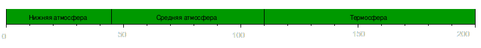

- Название: Фобос
- Дата открытия: 18 августа 1877
- Перид обращения: 7 ч 39,2 мин
- Размеры: 26,8 × 22,4 × 18,4 км
- Средний радиус: 11,1 км
- Площадь поверхности: 1600 км²
- Масса: 1,072·1016 кг
- Плотность: 1,876 г/см³
- g: 0,0084—0,0019 м/с²
- Альбедо: 0,071
- Температура : ~233 К
- Атмосфера: отсутствует
Mars
Марс — четвертая планета Солнечной системы. Имеет сходство с Землёй, но имеет меньшую величину и температуру на поверхности. На Марсе располагаются большие вулканы, пустыни и каньоны. Эта красная планета сопровождается двумя спутниками — Деймос, Фобос. Марс — единственный космический объект ( не считая Луны) до которого может дотянуться человек с помощью современных ракет и зондов.
Для космонавтов этот путь может занять примерно 4 года и будет новым шагом в освоении космоса. Рядом с экватором Марса, располагается район именуемый Тарсис. В этой зоне находятся вулканы огромных размеров. Тарсис имеет ширину 400 километров и высоту 10 километров. Самым большим вулканом Тарсис является, Гора Олимп, имеющей высоту 27 километров.

Метаданные
- Название: Марс
- Красная планета
- Номер: 4
- Перигелий: 206, 655, 215 км
- Афелий: 249, 232, 432 км
- Эксцентриситет: 0,0933941
- Скорость: 24,13 км/с
- Год: 687 дней
- Чей спутник: Солнца
- Спутники: 2 (Фобос и Деймос)
- Диаметр: 6, 792 км
- Масса: 6,4185·10 23 кг
- g: 3,711 м/с²
- v2: 5,03 км/с
- День: 24 часа 39 минут 35 секунд
- Температура: от -153°C до 20 °C
- Альбедо: 0.15
- Атмосферное давление: 0,4—0,87 кПа
Атмосфера
Из-за меньшей по сравнению с Землей силой тяжести Марс характеризуется меньшими градиентами плотности и давления его атмосферы, а поэтому марсианская атмосфера гораздо протяженнее земной. Высота однородной атмосферы на Марсе больше, чем на Земле, и составляет около 11 км. Несмотря на сильную разреженность марсианской атмосферы, в ней по разным признакам выделяются те же концентрические слои, что и в земной. В целом атмосфера Марса подразделяется на две крупные оболочки - гомосферу и гетеросферу. В гомосфере химический состав не зависит от высоты, поскольку процессы переноса тепла и влаги в атмосфере и их обмена по вертикали целиком определяются турбулентным перемешиванием. Так как молекулярная диффузия в атмосфере обратно пропорциональна ее плотности, то с некоторого уровня этот процесс становится преобладающим и является основной особенностью верхней оболочки - гетеросферы, где происходит молекулярное диффузное разделение. Граница раздела между этими оболочками, которая находится на высотах от 120 до 140 км, называется турбопаузой.
Состав атмосферы:| Углекислый газ | CO2 | 95,32 % |
| Азот | N | 2,7 % |
| Аргон | Ar | 1,6 % |
| Кислород | O2 | 0,13 % |
| Угарный газ | CO | 0,07 % |
| Водяной пар | H2O | 0,03 % |
| Оксид озота(II) | N2O2 | 0,013 % |
| Неон | Ne | 0,00025 % |
| Криптон | Kr | 0,00003 % |
| Ксенон | Xe | 0,000008 % |
| Озон | O3 | 0,000003 % |
| Формальдегид | CH2O | 0,0000013 % |
Атмосфера состоит из углекислого газа (95 %) с примесями азота, аргона, кислорода и других газов. Есть, в частности, и примесь водяного пара. Стоит отметить, что, несмотря на сильную разрежённость марсианской атмосферы, концентрация углекислого газа в ней примерно в 23 раза больше, чем в земной. Её состав и давление делают невозможным дыхание земных живых организмов[источник не указан 69 дней]. Для работы на поверхности планеты необходим скафандр, хотя и не настолько громоздкий и защищенный, как для Луны и открытого космоса. Атмосфера Марса сама по себе не ядовита и состоит из химически инертных газов. При давлении хотя бы в половину или треть от земного человек мог бы работать в атмосфере Марса без скафандра, только лишь с дыхательным аппаратом. Атмосфера несколько тормозит метеоритные тела, поэтому кратеров на Марсе меньше чем на Луне и они менее глубокие. А микрометеориты сгорают полностью, не достигая поверхности.
Структура атмосферы

Температурные колебания
Поскольку атмосфера Марса сильно разрежена, она плохо сглаживает суточные колебания температуры поверхности. Температура на экваторе колеблется от +30 °C днём до −80 °C ночью. На полюсах температура может падать до −143 °C. Однако суточные колебания температуры не столь значительны, как на безатмосферных Луне и Меркурии. Низкая плотность не мешает атмосфере формировать масштабные пыльные бури и смерчи, ветра, туманы, облака, влиять на климат и поверхность планеты.
Первые измерения температуры Марса с помощью термометра, помещённого в фокусе телескопа-рефлектора, проводились ещё в начале 1920-х годов. Измерения В.Лампланда в 1922 году дали среднюю температуру поверхности Марса 245 K (−28 °C), Э.Петтит и С.Никольсон в 1924 году получили 260 K (−13 °C). Более низкое значение получили в 1960 году У.Синтон и Дж. Стронг: 230 K (−43 °C).